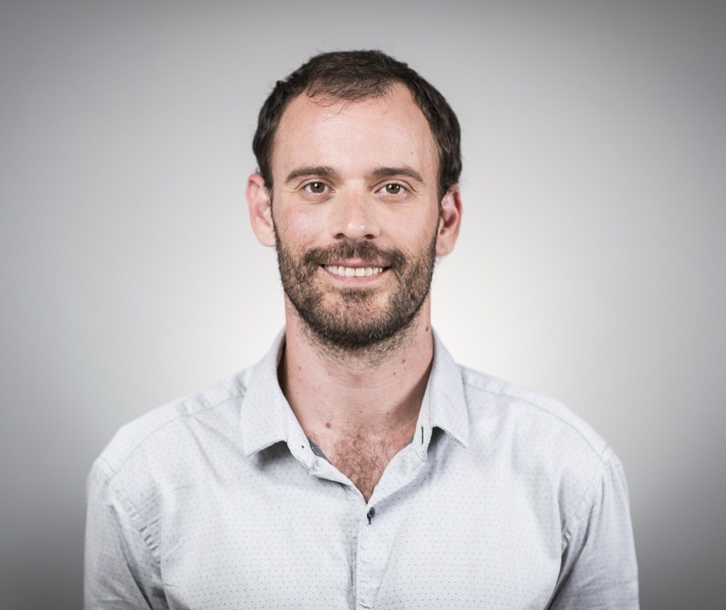

01
ESG spatial risk assessment & compliance
- Supply chain & sourcing risk scoring
- Physical, water, climate, biodiversity, social & regulatory risk
- EUDR, CSRD/ESRS and TNFD-aligned reporting
Geospatial & sustainability consulting
GeoAnalytics Lab helps companies, NGOs and public institutions turn satellite data into decisions, from ESG risk and EUDR/CSRD compliance to conservation, deforestation monitoring and GIS training.
41.3874° N, 2.1686° E · Barcelona — working globally
What we do
We start by working with your team to define what you really need, then apply state-of-the-art technology to turn data into informed decisions.
Projects & publications
Story maps, reports and papers where Felipe led the spatial analysis and mapping.
About
GeoAnalytics Lab is a Barcelona-based consultancy founded by Felipe Coelho Costa, a geospatial and sustainability specialist with more than 15 years of experience across Europe, Latin America, Africa and Asia.
Felipe has built EUDR deforestation monitoring pipelines, reviewed sourcing risk methodologies for agricultural supply chains, and led the technical side of WWF's global Water Risk Filter. He also spent six years teaching GIS at university level.
He holds an MSc in Geodesy and Geoinformation Science (TU Berlin), a degree in Environmental Engineering (University of São Paulo) and a postgraduate diploma in Machine Learning & AI (Columbia Engineering).

Tell us briefly about your project. We usually reply within one working day.